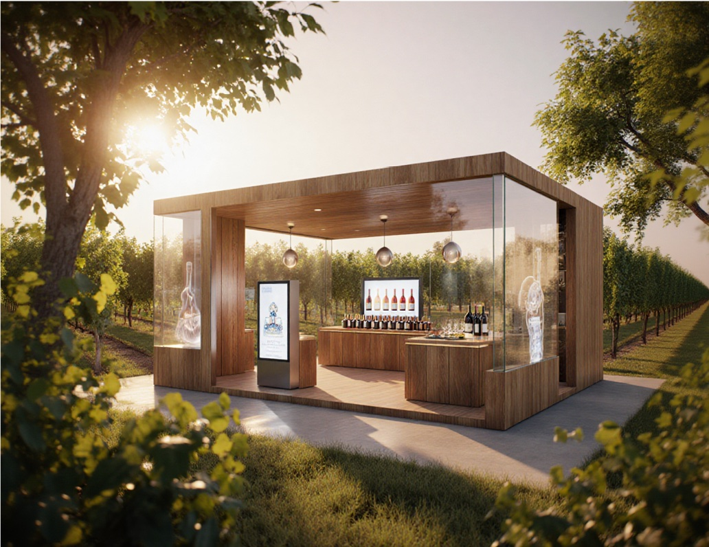

Emporter
Des contenus pratiques
Le visiteur télécharge tout ce qu’il faut pour préparer son voyage.
GuidesBrochuresCouponsBillets

Séduire, inspirer, informer les voyageurs, bien avant leur arrivée.
Une porte d’entrée digitale vers votre destination, ouverte à tous les voyageurs.
Les offices de tourisme virtuels d’NEOKROME réinventent la manière de séduire, d’inspirer et d’informer les voyageurs.
Bien plus qu’un simple site internet : un véritable espace immersif et interactif, où chaque utilisateur devient acteur de sa découverte.

Dès son arrivée, le visiteur est accueilli, guidé, puis invité à parcourir les richesses du territoire.
Des hologrammes d’hôtes virtuels reçoivent le visiteur et le guident dès son arrivée.
Les richesses du territoire, racontées en images.
Des points de vue spectaculaires, à explorer sous tous les angles.
Des cartes dynamiques pour se repérer et explorer la destination.
Pour plonger le visiteur dans l’atmosphère du territoire.
Le visiteur repart avec du concret, interagit avec le territoire et partage ce qu’il a ressenti.

Le visiteur télécharge tout ce qu’il faut pour préparer son voyage.
Les lieux phares du territoire prennent vie et se découvrent autrement.

Chaque visiteur peut y laisser son ressenti.
Véritable porte d’entrée digitale vers une destination, l’office de tourisme virtuel NEOKROME transforme la préparation du voyage en une expérience vivante et mémorable.
Et qui transforme la découverte en véritable expérience émotionnelle.

Espace d’information ↗

Office de montagne ↗
Office de tourisme, territoire, site touristique… Parlez-nous de votre destination : nous concevons l’univers 3D qui donnera envie de la découvrir.
contact@artexposium.fr →